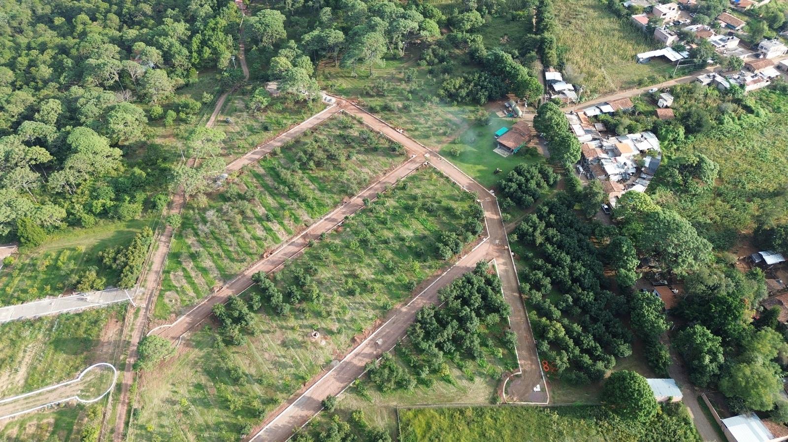
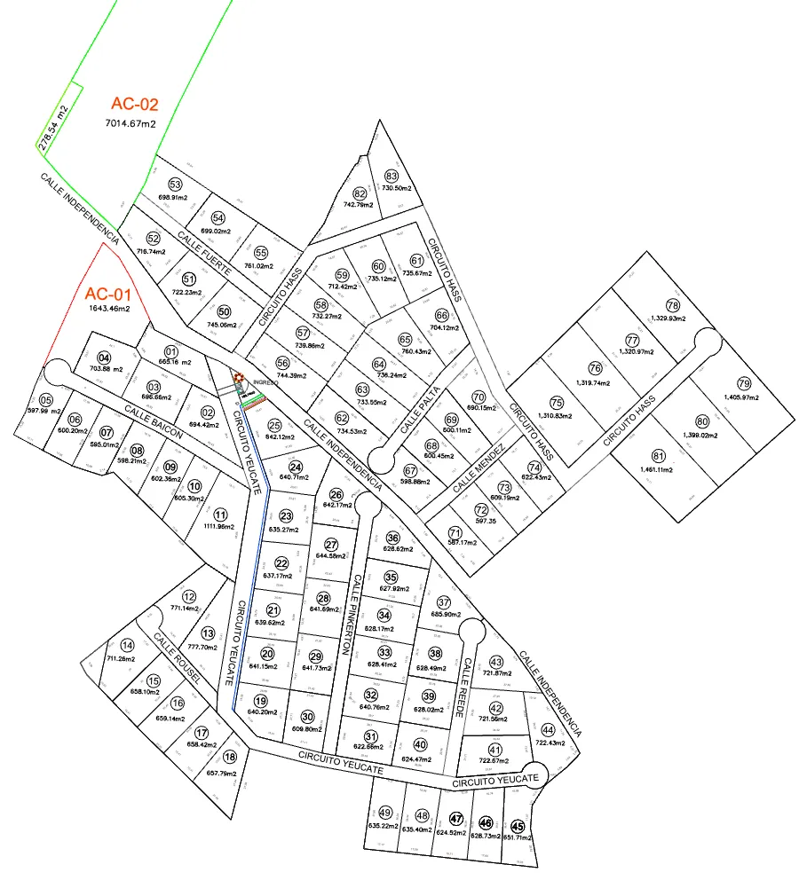
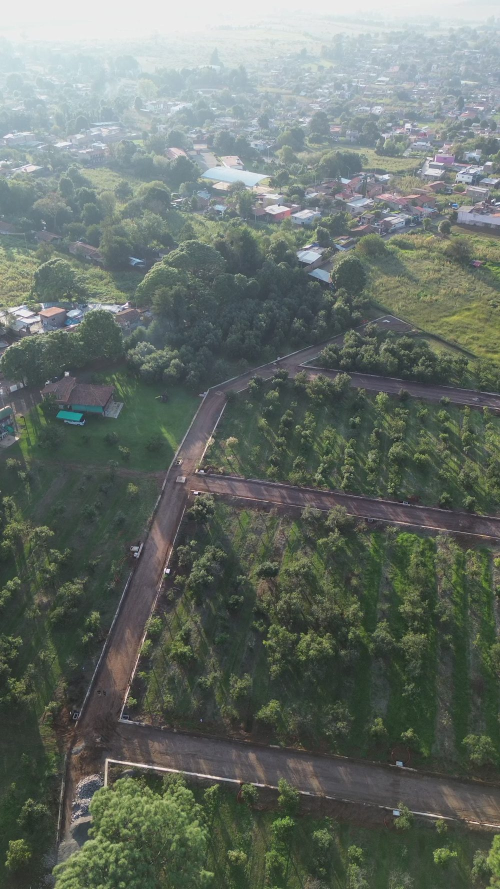

Pozo de agua propio
Abastecimiento de agua independiente para todo el desarrollo.
Vive el campo sin renunciar a los servicios: lotes con agua, luz y acceso controlado en plena sierra de Jalisco.
Yéucate reúne 83 terrenos campestres entre árboles frutales y bosque de pino en Chiquilistlán, uno de los pueblos de la sierra que todavía conserva su ritmo tranquilo.
Es ideal para una casa de descanso, un huerto propio o una inversión patrimonial en la región de Tapalpa, con toda la infraestructura de un desarrollo urbano.

Todo lo necesario para construir tu casa de campo desde el primer día.
Abastecimiento de agua independiente para todo el desarrollo.
Red eléctrica que llega a cada lote.
Infraestructura sanitaria con biodigestores.
Ingreso controlado y vigilancia.
Circuitos internos y camino de acceso.
Áreas verdes, cancha de pádel, fogateros, vivero y huerto de aguacates.
Toca un número en el plano o en la lista para ver su superficie y disponibilidad. Te confirmamos precio y formas de pago por WhatsApp.
47 % vendido
39 lotes disponibles

Toca cualquier número para ver su superficie y estatus, o pídenos la lista completa con precios.
Disponibilidad actualizada en noviembre de 2026; cambia día con día. Te la confirmamos por WhatsApp antes de apartar.
Fotos tomadas en el desarrollo en noviembre de 2026: calles, drenaje y lotes entre árboles.
Se formaliza con escritura pública ante notario: certeza jurídica para ti y tu familia.
Planes de hasta 72 meses sin trámites bancarios. Pregunta por el enganche y las tasas vigentes.
Todo apartado o anticipo se documenta con recibo o contrato, como en cualquier operación de Demetrius.

Un pueblo de calles tranquilas en la sierra de Jalisco, rodeado de bosque y huertas. A 20 km de Las Piedrotas de Tapalpa, conserva la vida de campo con menos afluencia turística.
La cabecera municipal, con servicios de salud, comercio y abasto, queda a unos minutos del desarrollo.
El punto marca la entrada del desarrollo. Agenda tu visita y te compartimos la ruta desde Guadalajara.
Cargando mapa…
Es propiedad privada. La compra se formaliza con escritura pública ante notario, lo que da certeza jurídica desde el primer día.
El precio depende de la superficie y la ubicación del lote dentro del desarrollo. Escríbenos por WhatsApp y te enviamos la lista vigente con precios por metro cuadrado y totales.
Sí. Hay planes de pago directo de hasta 72 meses, sin trámites bancarios. El enganche y la tasa dependen del plazo que elijas.
Pozo de agua propio, electricidad hasta cada lote, drenaje con biodigestores, caseta de acceso controlado, calles empedradas y áreas comunes con cancha de pádel, fogateros, vivero y huerto de aguacates.
Escríbenos por WhatsApp al 33 5107 0944. Coordinamos día y hora, y te compartimos la ubicación exacta de la entrada.
Pide la lista de precios o agenda un recorrido por el desarrollo. Te respondemos por WhatsApp.
Información comercial sujeta a disponibilidad. Las fotografías muestran el avance real del desarrollo en noviembre de 2026. Comercializa: Demetrius Grupo Inmobiliario.